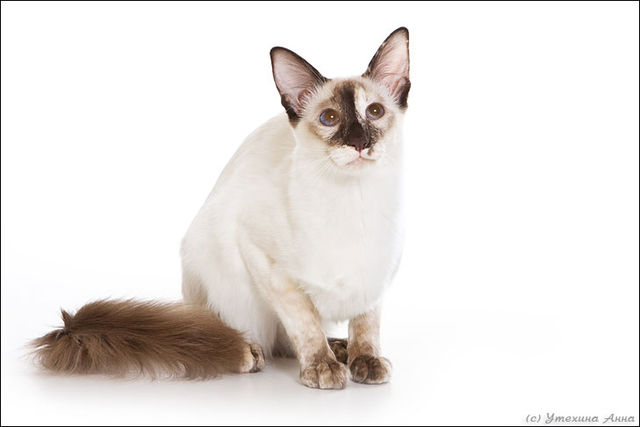

The Balinese is a long-haired breed of domestic cat with Siamese-style point coloration and sapphire-blue eyes. The Balinese is also known as the purebred long-haired Siamese, since it originated as a natural mutation of that breed, and hence is essentially the same cat with a medium-length silky coat and a distinctively plumed tail.
As is the case with their short-haired counterparts, a genetic distinction is made between traditional or "old-style" and modern body types. In the American standard, colour variants derived from the Colourpoint Shorthair are further considered a separate breed, known as the Javanese. There is no particular connection between these cats and the Indonesian islands of Bali and Java, from which they derive their names.
Like their Siamese ancestors, Balinese are sociable, vocal, playful and inquisitive, and considered among the most intelligent of all long-haired breeds.
References:
This article uses material from the Wikipedia article "Balinese", which is released under the Creative Commons Attribution-Share-Alike License 3.0.
Picture: "Balinese-cat-1" by Фотограф:Анна Утехина - dizigner.ru. Licensed under CC BY-SA 3.0 via Wikimedia Commons.
{kind=link}